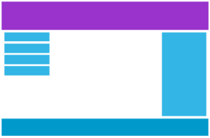

Responsive Web Design -Media Queries
Media queries are introduced in CSS3:CSS3 @media Queries。
Using @media queries, you can define different styles for different media types.
Example
If the browser window is smaller than 500px, the background will become light blue:
body {
background-color: lightblue;
}
}
Try it Yourself »
Add Breakpoints
In the previous tutorial, we used rows and columns to create web pages. They are responsive, but they do not display well on small screens.
Media queries can help us solve this problem. We can add breakpoints in the middle of the design, and different breakpoints have different effects.
Desktop Devices

Mobile Devices
Use a media query to add a breakpoint at 768px:
Example
When the screen (browser window) is smaller than 768px, each column's width is 100%:
.col-1 {width: 8.33%;}
.col-2 {width: 16.66%;}
.col-3 {width: 25%;}
.col-4 {width: 33.33%;}
.col-5 {width: 41.66%;}
.col-6 {width: 50%;}
.col-7 {width: 58.33%;}
.col-8 {width: 66.66%;}
.col-9 {width: 75%;}
.col-10 {width: 83.33%;}
.col-11 {width: 91.66%;}
.col-12 {width: 100%;}
@media only screen and (max-width: 768px) {
/* For mobile phones: */
[class*="col-"] {
width: 100%;
}
}
Try it Yourself »
Mobile-First Design
Mobile-first means prioritizing mobile design when designing for desktop and other devices.
This means we have to make some changes to the CSS.
We modify styles when the screen is smaller than 768px, and also need to modify styles when the screen width is greater than 768px. Here is a mobile-first example:
[class*="col-"] {
width: 100%;
}
@media only screen and (min-width: 768px) {
/* For desktop: */
.col-1 {width: 8.33%;}
.col-2 {width: 16.66%;}
.col-3 {width: 25%;}
.col-4 {width: 33.33%;}
.col-5 {width: 41.66%;}
.col-6 {width: 50%;}
.col-7 {width: 58.33%;}
.col-8 {width: 66.66%;}
.col-9 {width: 75%;}
.col-10 {width: 83.33%;}
.col-11 {width: 91.66%;}
.col-12 {width: 100%;}
}
Other Breakpoints
You can add breakpoints according to your needs.
We can also set breakpoints for tablet devices and mobile phone devices.
Desktop Devices
Tablet Devices
Mobile Devices
Add a media query when the screen is 600px, and set new styles (screen larger than 600px but smaller than 768px):
Example
Note that the two sets of class styles are the same, but the names are different (col- and col-m-):
[class*="col-"] {
width: 100%;
}
@media only screen and (min-width: 600px) {
/* For tablets: */
.col-m-1 {width: 8.33%;}
.col-m-2 {width: 16.66%;}
.col-m-3 {width: 25%;}
.col-m-4 {width: 33.33%;}
.col-m-5 {width: 41.66%;}
.col-m-6 {width: 50%;}
.col-m-7 {width: 58.33%;}
.col-m-8 {width: 66.66%;}
.col-m-9 {width: 75%;}
.col-m-10 {width: 83.33%;}
.col-m-11 {width: 91.66%;}
.col-m-12 {width: 100%;}
}
@media only screen and (min-width: 768px) {
/* For desktop: */
.col-1 {width: 8.33%;}
.col-2 {width: 16.66%;}
.col-3 {width: 25%;}
.col-4 {width: 33.33%;}
.col-5 {width: 41.66%;}
.col-6 {width: 50%;}
.col-7 {width: 58.33%;}
.col-8 {width: 66.66%;}
.col-9 {width: 75%;}
.col-10 {width: 83.33%;}
.col-11 {width: 91.66%;}
.col-12 {width: 100%;}
}
Try it Yourself »
The above code seems redundant, but it can automatically set different styles based on screen size, so it is still very necessary.
HTML Examples
For desktop devices:
The first and third sections span 3 columns. The middle section spans 6 columns.
For tablet devices:
The first spans 3 columns, the second section spans 9 columns, and the third spans 12 columns:
<div class="col-3 col-m-3">...</div>
<div class="col-6 col-m-9">...</div>
<div class="col-3 col-m-12">...</div>
</div>
Orientation: Landscape/Portrait
Combined with CSS media queries, layouts can be created that adapt to the orientation of different devices (landscape, portrait, etc.).
Syntax:
orientation：portrait | landscape
- portrait：Specify that the height of the visible page area in the output device is greater than or equal to the width.
- landscape：Except in the case of the portrait value, all are landscape.
Example
If it is landscape orientation, the background will be light blue:
body {
background-color: lightblue;
}
}
Try it Yourself »